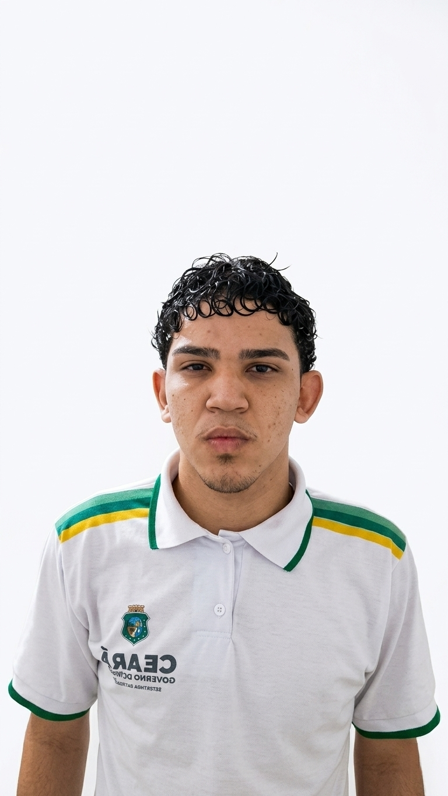
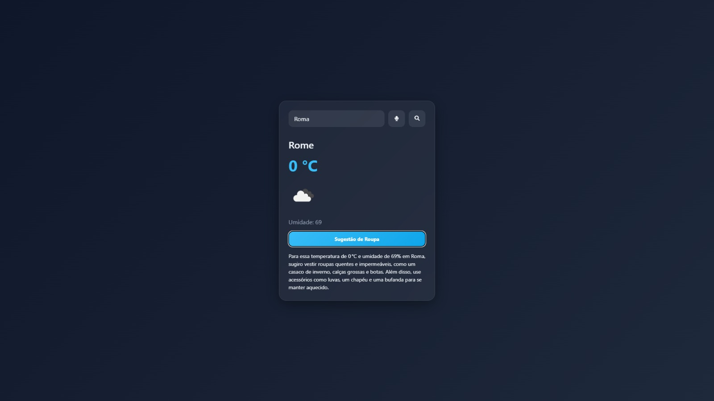
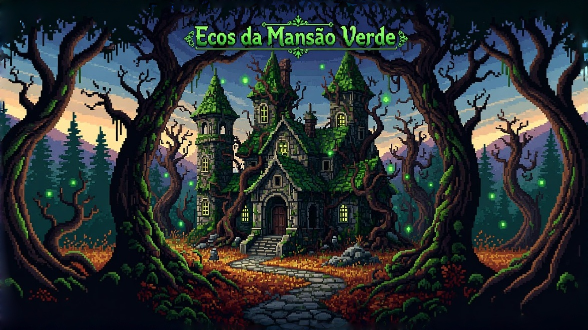

André Levy
Sou estudante do curso técnico em Desenvolvimento de Sistemas na EEEP Professor César Campelo. Tenho foco em desenvolvimento Front-End, com interesse na criação de interfaces funcionais, responsivas e bem estruturadas. Neste portfólio, apresento projetos desenvolvidos durante minha formação, sempre buscando evolução contínua e boas práticas de desenvolvimento.
Tecnologias e Linguagens
HTML5
CSS3
JS
Formação
2025-2026
HTML5 e CSS3 - Curso em Vídeo
Conclusão dos 5 módulos completos do curso, com domínio dos principais conceitos de estruturação e estilização de páginas web. Possuo os 5 certificados, comprovando a conclusão integral da formação.
2025-2026
Java Script - Curso em Vídeo
Curso de JavaScript pelo Curso em Vídeo, com foco em lógica de programação, DOM e interatividade no desenvolvimento web.
2026
AWS Cloud Fundamentals
Curso de AWS com foco em fundamentos de computação em nuvem, serviços principais e boas práticas para aplicações escaláveis e seguras.
2026
Google UX Design
Curso de UX Design do Google com foco em experiência do usuário, pesquisa, prototipação e criação de interfaces intuitivas e centradas no usuário.
2025
Aprendendo a Programar com Games e IA – Fundação Demócrito Rocha
Curso focado em lógica de programação, desenvolvimento de jogos e fundamentos de Inteligência Artificial. Participei da competição final, desenvolvendo um jogo autoral e conquistando o 2º lugar entre os participantes.
Projetos

2025
Projeto Streaming
Projeto desenvolvido no 2º ano do Ensino Médio com o objetivo de praticar a construção de sites e a organização de interfaces web. O tema escolhido foi Streaming, simulando uma plataforma de exibição de filmes e séries. O projeto foi utilizado para aplicar conceitos de HTML5 e CSS3, incluindo estruturação de páginas, estilização de componentes, organização visual e responsividade básica, servindo como base para o desenvolvimento das minhas habilidades em Front-End.

2026
Projeto Aeris
Aeris é uma aplicação web de previsão do tempo desenvolvida com foco em experiência do usuário e interatividade. O sistema permite buscar qualquer cidade e visualizar informações em tempo real, como temperatura, umidade e condições climáticas. Um dos diferenciais do projeto é a integração com IA para sugestão de roupas com base no clima, tornando a experiência mais útil e personalizada. A interface foi pensada para ser moderna, intuitiva e responsiva, garantindo boa usabilidade em diferentes dispositivos.

2025
Ecos da Mansão Verde
Ecos da Mansão Verde é um projeto desenvolvido com foco em unir criatividade, narrativa e tecnologia, explorando conceitos de desenvolvimento de jogos aliados à Inteligência Artificial. A proposta do projeto gira em torno de uma experiência imersiva, onde o usuário é conduzido por uma atmosfera envolvente, repleta de mistérios e interações que estimulam o raciocínio e a curiosidade.
Durante o desenvolvimento, foram aplicados conhecimentos de lógica de programação, design de interfaces e construção de mecânicas interativas, sempre buscando proporcionar uma experiência fluida e intuitiva. Além disso, o projeto também destaca a importância da narrativa como elemento central para engajamento do usuário.
Com Ecos da Mansão Verde, conquistei o 2º lugar na competição “Aprendendo a Programar com Games e IA”, promovida pela Fundação Demócrito Rocha, o que reforça não apenas a qualidade técnica do projeto, mas também a capacidade de transformar ideias criativas em soluções concretas e impactantes.